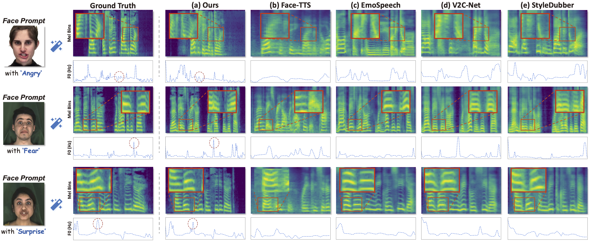
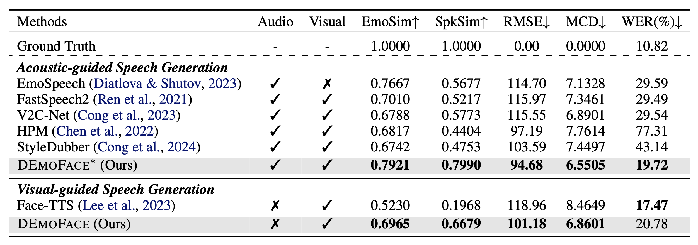
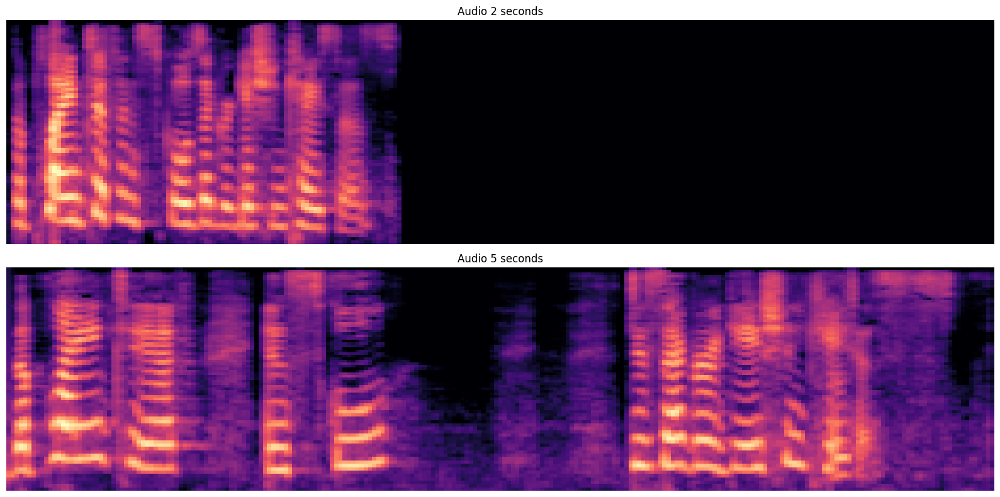

Qualitative Comparision
See Mel-Spectrogram Comparison
As shown in Fig. 3, from mel-spectrogram in the first row, we observe severe temporal differences and over-smoothing issues in Face-TTS, Emo-Speech, and V2C-Net, causing duration asynchronization and quality degradation. Furthermore, from the F0 curve in the third row, the other baselines exhibit distinct F0 contours showing different pitch, emotion, and intonation with the ground truth (GT). In contrast, our results are closer to the GT, benefiting from enhanced multi-conditional generation and dynamic synchronization capabilities of DEMOFACE.
Virtual Characters Dubbing
To evaluate the performance of our method in 'in the wild' scenarios, we employed the Flux model to generate a series of virtual faces, which were used as face prompts to drive audio synthesis.
Quantitative Results
As shown in Tab.1, compared with Face-TTS, we achieve 17.35% and 47.11% improvements in terms of EmoSim and SpkSim, reflecting the great ability to maintain voice-identity while enhancing consistency. For prosody modeling, we can estimate a more precise F0 contour with relative 14.95% gains, exhibiting more natural speech expressiveness. The MCD improved by a relative 18.96%, indicating minimal acoustic difference with the target speech. While Face-TTS achieves a better WER by utilizing over 10 times the data, DEmoFace significantly improves naturalness and consistency with fewer data.
User Study

DEmoface demonstrates a clear advantage over SOTA methods in both metrics, particularly in achieving higher MOS naturalness with 28% relative improvement, which validates the effectiveness of our method. Furthermore, compared to acoustic-guided EmoSpeech, we achieve better MOS consistency, demonstrating our ability to generate speech with greater emotional and identity consistency.
Speech Duration Controllability
We can synthesize the same text into speech of varying lengths due to our dynamic alignment between speech and text.

| Text | Length | Sample |
|---|---|---|
| The plaintiff in school desegregation cases. | ||
| 2 Seconds | ||
| 5 Seconds |